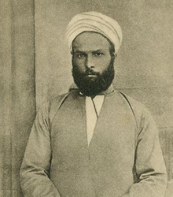

Muhammed Abduh (1845-1905)

Ýslam düþüncesinin yeniden canlanmasýnda önemli katkýlarda bulunan, Mýsýr'ýn tanýnmýþ alimlerinden, Bediüzzaman Hazretlerinin, Ýttihad-ý Ýslam'da seleflerim dediði kiþiler arasýnda ismi zikredilen ( Divan-ý Harb-i Örfi, s. 29) Muhammed Abduh, 1845 yýlýnda Aþaðý Mýsýr'da, Bahire ilinin Mahalletü'n-Nasr Köyü'nde doðdu. Zengin olmalarýna raðmen, fedakarlýktan hiçbir zaman kaçýnmayan, adil, dürüst olarak tanýnan bir babanýn; iffet ve takvasý ile meþhur bir annenin çocuðuydu. Küçük yaþta Kur'an-ý Kerim'i hýfzetti. Tanta'daki eðitimi sýrasýnda zamanýn þartlarýna uygun eðitim vermedikleri gerekçesiyle okuldan bir süre ayrýldý. Fakat çok geçmeden yeniden okula döndü. Amcasý Þeyh Derviþ, geniþ ufkuyla Abduh'un dini ilimlere karþý sevgi beslemesini saðladý. 1866'da Ýslamî ilimlerin merkezi kabul edilen Ezher Üniversitesi'ne kaydoldu. Ancak, üniversitenin o sýralardaki eðitim metodu kendisini tatmin etmedi. Bir ara dünyadan tamamen elini-eteðini çekip tasavvufa aðýrlýk verdi. Ancak, amcasý inzivaya çekilerek tasavvufa yönelmesine müsaade etmedi.Amcasý dýþýnda, hayat seyri üzerinde etkili olan bir baþka kiþi Cemaleddin Afganî'dir. Onunla tanýþmasý (1872) hayatýnda adeta bir dönüm noktasý teþkil eder. Afganî'nin etkisinde kalmanýn ötesinde, en önemli talebesi olarak tanýndý. Afganî'nin de, Abduh'un münzevi bir hayat yaþamayý terk ettirip aktif hale gelmesinde önemli etkisi oldu. 1877 yýlýnda okulunu tamamlayarak "alim" unvanýný aldý ve mezun oldu. Bir süre özel ders verdikten sonra Darü'l-Ulum'a müderris olarak atandý (1879). Bu görevi devam ederken Afganî'nin tesiriyle yayýncýlýk iþine de giriþti. Müderrisliði bir yýldan kýsa sürdü ve vazifeden alýnarak doðduðu mahalde ikamete mecbur edildi. Ancak, bir bakan tarafýndan geri çaðrýlarak el-Vaka'-i Mýsriye isimli gazetenin baþyazarlýðýna getirildi (1880).
Ýngiliz iþgaline karþý çýkan ve ordu komutanlýðýný yapan Arabi'yi (Urabi) desteklediði gerekçesiyle sürgüne gönderildi. Evvela Suriye'ye yerleþtiyse de Afgani'nin daveti üzerine Paris'e gitti. Burada, "el-Urvetü'l-Vuska" adlý dergide, Ýslami uyanmaya dair yazýlar yazdý. Halký, Ýngiliz iþgaline karþý mücadele vererek, milli þuuru uyandýrmaya çalýþtý. Ýngilizler, derginin Ýslam ülkelerine giriþini yasaklayarak yayýný engellediler. Bir süre sonra derginin yayýný durdu.
Abduh, 1885 yýlýnda Beyrut'a gelerek eðitimle meþgul oldu. 1889 yýlýnda Kahire'ye döndü. Kýsa bir süre sonra da asliye hukuk mahkemesine hakim olarak atandý. Daha sonra temyiz mahkemesinde müþavir olarak çalýþtý. Bu arada þeriat mahkemelerinin ýslahýna dair eserini yazdý (1900). El-Ezher'in idare meclisine seçildi. Ezher'in geliþmesine katkýda bulunduðu gibi geniþ bir muhite hitap edecek hale getirilmesinde de önemli katkýlarda bulundu. Daha önce okutulmayan tarih, coðrafya, matematik ve felsefe gibi müspet bilimlerin okutulmalarýný saðladý. Mýsýr'da en yüksek dini makam olan müftülüðe atandýktan (1899) sonra vefatýna kadar bu görevde kaldý. Görev yaptýðý süre boyunca bu makama büyük bir saygýnlýk kazandýrdý. Müftülüðü sýrasýnda; Müslümanlarýn faiz ve kardan hisse alma gayr-ý Müslim ülkelerde Müslüman olmayanlar tarafýndan kesilen hayvanlarýn etlerini yeme, geleneksel kýyafetler dýþýndaki kýyafetlerle örtünme gibi konularda ruhsat vermesi çok ciddi tartýþmalara neden oldu.
Son dönemlerinde muhtelif eserler kaleme aldý. En büyük eseri olan Risaletü't-Tevhid'i yazdý. Bazý müsteþriklerin Ýslam'a yönelttikleri ithamlara karþý müdafaa maksadýyla, "El-Ýslam ve'l-Nasraniyye Ma'a'l-Ýlm ve'l-Medeniyye" adlý eserini neþretti. Çok önem verdiði Kur'an-ý Kerim tefsirini tamamlamak kendisine nasip olmadý. Bazý kýsýmlarýný neþretmiþ, vefatýndan sonra ünlü talebesi Raþid Rýza tarafýndan tamamlanarak yayýnlanmýþtýr. Henüz tasarladýðý çalýþmalarý tamamlayamadan, 1905 Temmuz'unda vefat etti. Cenazesi, hükümet yetkililerinin de hazýr bulunduðu, büyük bir kalabalýk kitle tarafýndan kaldýrýlarak, Kahire'deki El-Afifi mezarlýðýna defnedildi.
Ýslamiyet'in özünde; Allah'a teslimiyet, Peygamber'e (asm) hürmet ve Kur'an-ý Kerim'e meftuniyet vardýr. Ýslam akla büyük önem verir. Bu özellik garbý anlamada kolaylýk saðlar. Ýslam özgür irade dinidir. Halk arasýnda yanlýþ bir þekilde yerleþmiþ bulunan, yanlýþ mukadderat inancýna eleþtiriler getirerek halkýn iradesi ile tecelli eden yönetimin faziletlerini övdü. Doðru düþünce ve salih amel arasýnda dinamik bir iliþkinin var olduðunu savundu. Mantýk ve düþüncenin önemine deðinerek, ihmal edilen Ýslam felsefesinin canlanmasý için çaba sarf etti. Akli deliller imaný zayýflatmanýn aksine, güçlenmesine vesile olur. Düþünme sanatý ve bilimi olarak gördüðü mantýk ilminin deðerinin tam olarak anlaþýlmasý, Ýslam Kelamýnýn daha iyi anlaþýlmasýna katkýda bulunacaðý gibi, gerekli de olduðunu savundu.
Kur'an, bütün zamanlarý kapsayan deðiþmez bir anayasadýr. Ýçtimai ve siyasi sýkýntýlarýn giderilmesi, örgütlenmelerin saðlanmasý hususunda cevap veren bir temel kaynaktýr. Batýdan iktibas edilen kanunlarýn hiçbir ayýrým gözetmeksizin uygulamaya konulmasý zihinsel anarþiye sebep olduðu gibi, birlik ve beraberliðin de kaybýna sebep olmuþtur. Müslümanlar, hali hazýrda dinlerinde görünmeyen, örtülü dinamizm unsurlarýný harekete geçirerek kültürel ve ahlaki kurtuluþu gerçekleþtirebilirler. Bu amaç için; Kur'an ve sünnetten çýkarýlacak yasalarla kamu hukukunun gözetilerek öncelikli hale getirilmesi, dört mezhep (ehl-i sünnet) alimlerinin bir araya gelerek iyi noktalarýn kýyaslanarak birleþtirilmesi, tevhidin saðlanmasý üzerinde ehemmiyetle durdu. Gerektiðinde, sadece bir mezhepten istifade etmekle kalýnmayýp, her dört mezhebin hükümlerini ve hatta bunlarýn dýþýndaki görüþleri de bir araya getirmek suretiyle karþýlaþtýrýlmalý ve en iyi senteze bu yolla gidilmesi gerektiðini yazdý.
Abduh, içtihat kapýsýnýn açýk tutulmasýndan yanadýr. Kiþi bütün kayýtlardan baðýmsýz olarak düþünebilmeli, serbestçe araþtýrma yapabilmelidir. Din otoritesi sayýlan kiþilerin sunmuþ olduðu bilgilerin delil gösterilmeden körü körüne taklit edilmesine karþýdýr. Zamanýn deðiþen þartlarýna paralel olarak, yeni yeni ortaya çýkan meselelere tatmin edici cevaplar verebilmek için içtihat kapýsýnýn açýk olmasý gerektiðini savundu. Akýlcý bir din olan Ýslamiyet, yeniliklere açýktýr. Ýslam, insanlarý din adamý otoritesinden kurtarýp Yaratýcý ile yüz yüze getirmek suretiyle aracýlarý ortadan kaldýrmýþtýr ve aracýlara da gerek yoktur.
Abduh'a göre; din bilimleriyle fen bilimleri ayný kaynaktan gelmekle beraber kendilerine özgü düþünce þartlarý vardýr. Dolayýsýyla bunlarý, paralel yürütülmesi gereken iki ayrý akým olarak görmek gerekir. Ýslam'ýn son din ve Hz. Muhammed'in (asm) son peygamber olmasýndan hareketle, insanlarýn belli bir olgunluk seviyesine ulaþtýklarýndan, vahiy artýk gelmeyecek, dolayýsýyla insanlarýn "artýk kendi ahlaki ve entelektüel salvation'larýný" kendilerinin yürütebilecekleri inancýný taþýr. Dinler tarihindeki geliþmelerden örnekler vererek, zamanla insaniyetteki tekamüle paralel olarak, dini kaidelerin kurallarýnýn sertlikten yumuþamaya doðru bir seyir takip ettiðini belirtir. Ýnsanlarýn akli olgunluða eriþtikleri bir zamanda Ýslam nazil oldu. En son gelen Ýslam, insanda var olan his ve duyarlýlýklarý birleþtiren akla hitap etti. Aklý tabiatla uzlaþtýrdý. Esrar perdeleri ile beraber aracýlarý da ortadan kaldýrdý. Ýnsanlar melekeleri vasýtasýyla günümüzde Allah'a daha da yakýn oldular.
Her þeyin önceden yaratýldýðý, hür iradenin etkisinin olup olmadýðý konularýnýn tartýþýlmasýnda ahlaký ön plana çýkardý. Allah'ýn her þeyi ezelden bilmesi; kulunun kendi iradesi ile ne yapacaðýný, mükafat veya mücazata muhatap olacaðýný bilmesi, kulun hür iradesi ile hareket etmesine mani teþkil etmez. Ýnsaný, her hangi bir þeye zorlamadýðý gibi alýkoymaz da. Hür iradeyi kabul etmemek, insanýn amellerinin kendisinden olmadýðýný savunmak, sorumluluðu ortadan kaldýrýr. Oysaki dinen kul ancak, yaptýklarýndan sorumludur. Zamanla toplumda teþekkül eden "kadercilik" halkýn sömürülmesinde, yöneticiler tarafýndan bir araç olarak kullanýldýðýný ve Ýslamiyet ile çeliþtiðini savundu.
Dindeki ýslahatý, ahlaki bir reform olarak telakki eder. Yapýlmak istenen þey insanlarý inançlarý vasýtasýyla iyi ahlak sahibi olmalarýný saðlayarak, sosyal durumlarýný daha iyi bir seviyeye getirmektir. Bir taraftan dindeki yanlýþ telakki ve inanýþlar düzeltilirken, yanlýþ anlamalar tashih edilirken diðer yandan da insanlarýn daha ahlaklý hale gelmeleri saðlanýr. Kur'an-ý Kerim, dünya ve ahret saadetini netice veren ve insanlara kýlavuzluk etmek maksadýyla gönderilen kutsal bir kitaptýr. Önemli olan husus, Kur'anýn lafzi manasýna takýlýp kalmadan özünü kavramaya çalýþmaktýr.
Abduh ve Afganî, gerek Emevi-Abbasi ve gerekse sonraki dönemlerde hilafetin saltanata dönüþmesinden sonra, saltanat otoritesini saðlama babýnda, bazý alimlerin meþrulaþtýrma amacýný taþýyan ve sonraki dönemlerde taklit edilen görüþlerinin neticesi olarak yerleþmiþ bulunan, siyasi anlamdaki itaatkarlýkla mücadele ettiler. Müslümanlarý bu taklit zincirlerinden kurtarmak için büyük zorluklarla mücadele ettiler. Meþvereti esas alan meclisin teþekkülüne destek verdiler. Dört halifeden sonra ideal þeklin bozulduðunu, hanedana dönüþerek asli özelliðini kaybettiðini, despotlara hizmet eden bir araç haline düþürüldüðünü savundular. Bunun Ýslam dünyasýnda normal bir hükümet þekli almasýný da bir kýsým ulemanýn yanlýþlarýna ve emirlere baðýmlýlýklarýna dayandýrýrlar. Bu duruma ulema sebep olduðu gibi, kurtuluþ da ancak, ulemanýn öncülüðünde gerçekleþtirilebilirdi.
Abduh'a göre Ýslam'daki devlet yönetimi þer'i deðil, toplumsal bir durum arz eder. Þeriata göre; halifenin, yöneticinin, hakimin ve müftünün makamlarýnýn ayrýcalýklarý yoktur. Fakat, þeriat onlarýn ödev ve sorumluluklarýný belirlemiþtir. Batýdaki durumun aksine, halifelik teokratik bir sistem deðildir. Teokratik sistemde, Tanrý hükümlerini doðrudan doðruya yöneticilere bildirir. Halk otomatikman itaat etmek ve boyun eðmekle yükümlüdür. Böyle bir sistemde halk yöneticiyi, Tanrý buyruklarýn düþmaný dahi bilse karþý çýkamaz. Yönetenlerin her hal ve davranýþlarý dini hüküm þeklindedir. Buna karþýlýk Ýslam'da günahkar yöneticiye boyun eðmek caiz deðildir. Eðer yöneticinin yaptýklarý sürekli olarak þeriata aykýrýlýk teþkil ediyorsa, halk onu iktidardan alma hakkýna sahiptir. Nasýl ki, ümmet ve temsilcileri onu bu makama getirmiþlerse ayný þekilde, menfaatleri gereði onun yönetimine son verme hakkýna da sahiptirler.
Meþrutiyetten yana tavýr koymuþtur. Yöneticiler, bilirkiþilere danýþarak þeriatý izlemek suretiyle adaletle yönetebileceklerine inanýyordu. Buna en uygun yönetim þekli o zaman için meþrutiyet idi. Halkýn yönetime katýlmasý için önce mahalli þuralar aracýlýðýyla yardýmlaþarak halkýn genelinin fikri alýnmalý ve daha sonra seçimle teþekkül edecek bir meclisin, halkýn ve devletin problemlerini çözmesi gerektiðini savundu. Bu durumun gerçekleþebilmesi için de halkýn eðitiminin þart olduðunu belirtmiþtir.